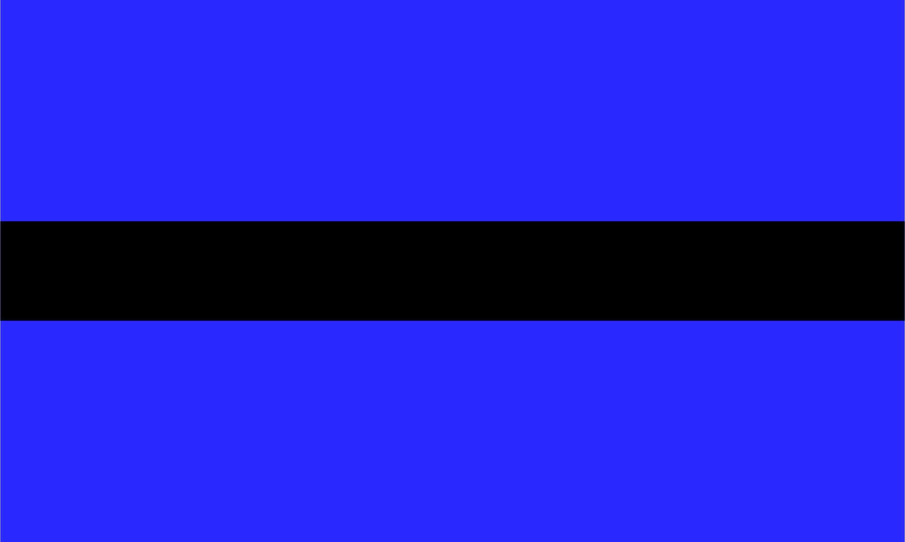
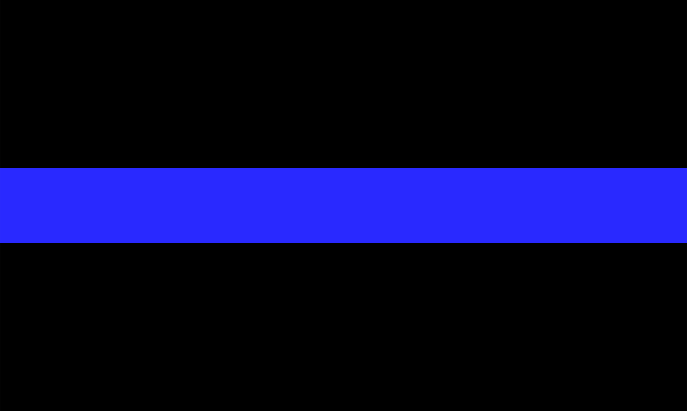
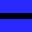
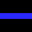

↑
We wave this flag
when one of our
black brothers or
sisters is killed.
Both represent thin
lines that should
never be crossed.
↑
We wave this flag
when an officer
is killed in the
line of duty.
Post to:
Facebook
Twitter
Instagram
Download Graphics
<3
NA
X
DrV
at
C
Both represent thin lines that should never be crossed.
↑
We wave this flag when one of our black brothers or sisters is killed.
Post to:
Facebook
Twitter
Instagram
Download
Graphics
NA
X
VN
at
C
We wave this flag when an officer is killed in the line of duty.
↓
 